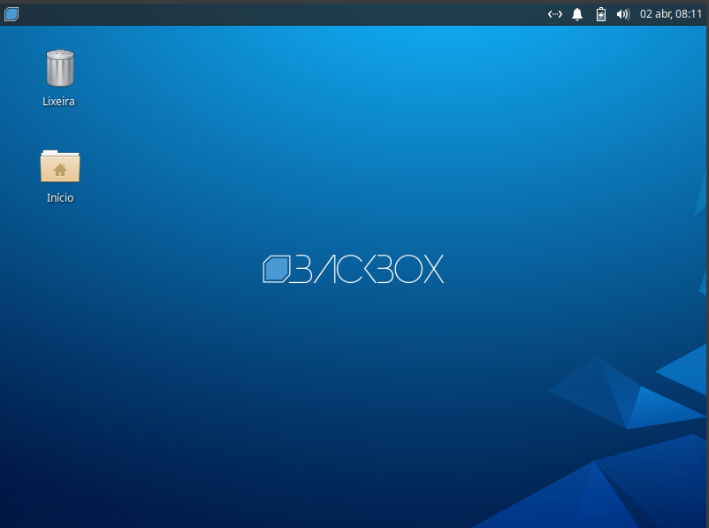
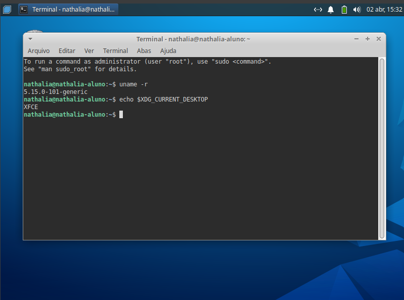

| Nome |
Matrícula |
| Nathália Caroline Gumbio |
24147844 |
| Maria Eduarda Freitas |
24147807 |
| Joui Bonfim Mendonça |
24147960 |
| Elisa Renata Paiva |
24147871 |
| Pedro Otávio Camolesi |
24149707 |
LINUX - PESQUISA DISTRO
Backbox
História e Origem
O BackBox Linux foi lançado pela primeira vez em 2010 por um grupo italiano de especialistas em segurança da informação. O projeto foi originalmente desenvolvido para fornecer uma plataforma de teste de penetração gratuita e open source que fosse fácil de usar e segura.Este rapidamente se tornou uma das distribuições Linux mais populares para testes de penetração. É usado por profissionais de segurança da informação em todo o mundo, incluindo agências governamentais, empresas e organizações sem fins lucrativos.
Requisitos do Sistema
- CPU 32-bits ou 64bits;
- 256MB de memória RAM;
- 2GB de espaço em disco para instalação;
- Placa de Vídeo com suporte a resolução 800x600;
- Drive de DVD-ROM ou Porta USB.
Qual a finalidade dessa distribuição ?
BackBox Linux é uma distribuição Linux baseada em Ubuntu, projetada para testes de penetração e análise de segurança. destinada a realizar testes de penetração e avaliações de segurança que fornece um kit de ferramentas de análise de rede e sistemas de computador. Projetado para ser rápido e fácil de usar, proporciona um ambiente de trabalho mínimo, porém completo. A BackBox Linux é uma distribuição Linux focada em testes de penetração e segurança cibernética. Ela é projetada para oferecer uma ampla gama de ferramentas de hacking ético e análise de vulnerabilidades. Portanto, é utilizada principalmente por profissionais de segurança cibernética, hackers éticos e pesquisadores de segurança para realizar testes de segurança em sistemas e redes, identificar vulnerabilidades e avaliar a postura de segurança de um sistema ou rede.
Em qual distribuição a backbox é baseada ?
BackBox Linux é um sistema operacional baseado na distribuição Ubuntu, com foco na avaliação de segurança e testes de penetração. BackBox é um projeto da comunidade Open Source, projetado para ser rápido, fácil de usar e fornecer um ambiente de trabalho mínimo ainda completo, graças aos seus próprios repositórios de software, sempre sendo atualizado para a versão estável mais recente dos mais utilizados e mais conhecido éticos ferramentas de hacking.
BackBox Linux 7
Alguns dias atrás foi apresentado o lançamento da nova versão do BackBox Linux 7, no qual se menciona que chega com um grande número de atualizações e sobretudo chega com uma mudança na base do sistema, desde esta nova versão Ele chega baseado no Ubuntu 20.04 LTS. O principal objetivo do BackBox é fornecer um sistema alternativo, altamente customizável e com bom desempenho.
Qual o ambiente desktop utilizado?

Qual a versão instalada da distribuição?

Aqui temos algumas imagens dessa distribuição
.png)
.png)
.png)
Link para download da imagem do SO
O link abaixo é do site da BackBox, acesse o mesmo se desejar mais informações!
Clique aqui